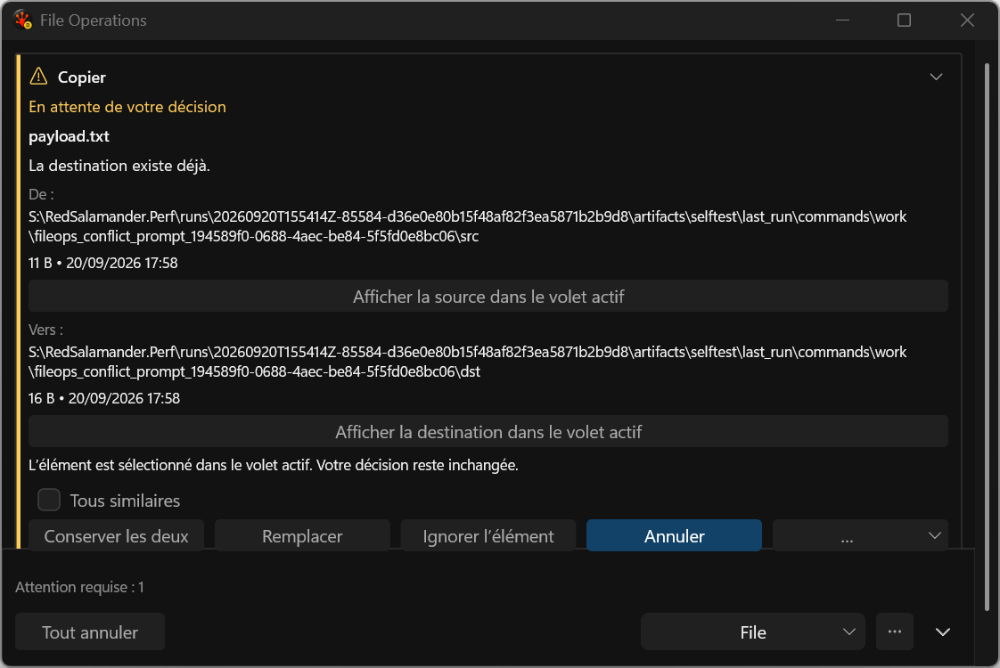
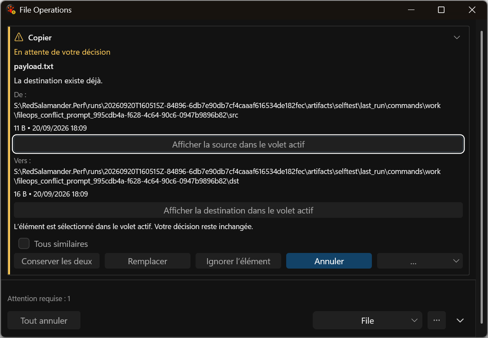
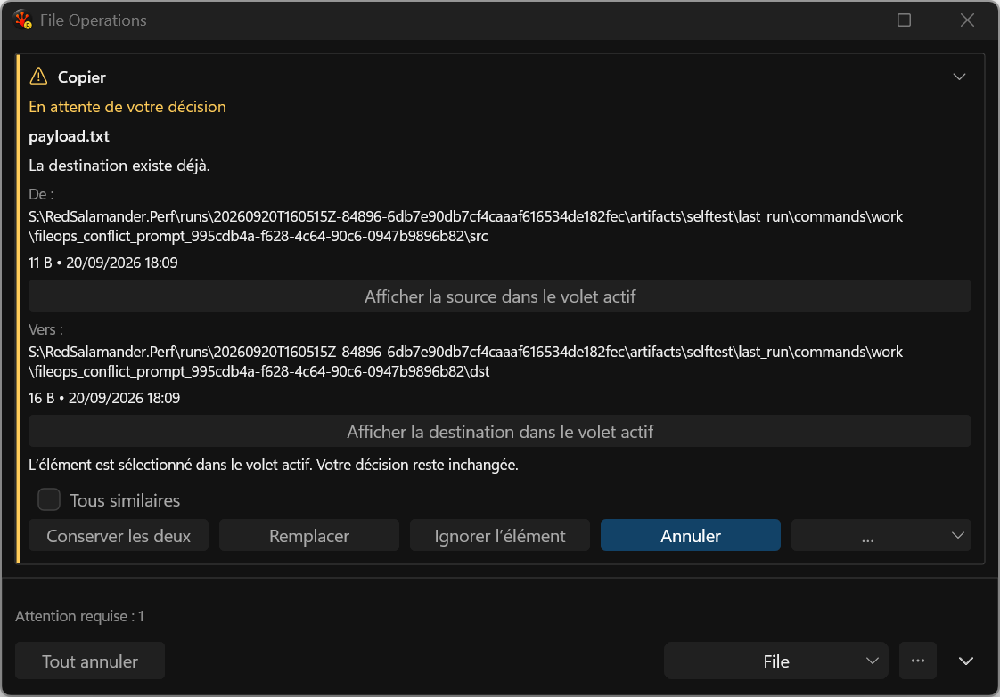
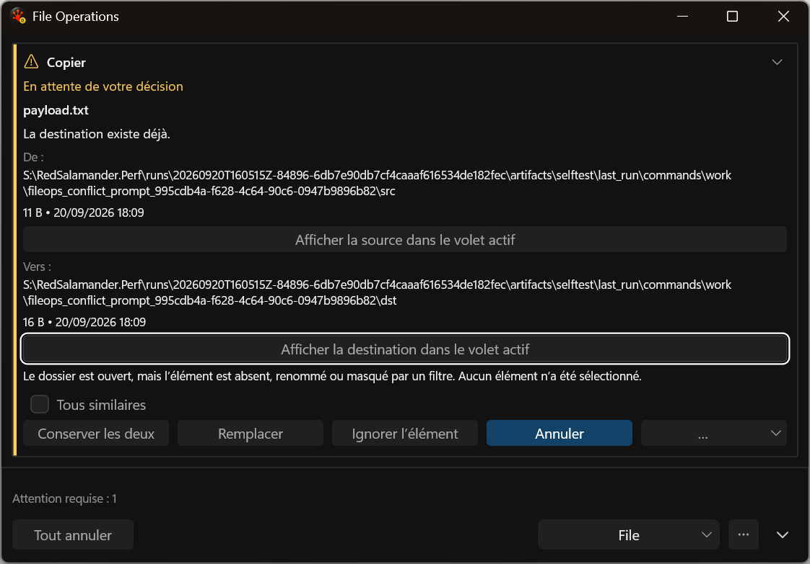

before — before-returned__fr-FR

Directly reviewed
Actual application harness captures. Before: inactive return. After: active keyboard return with visible focus. Narrow/short layout and final native acceptance remain open.

Directly reviewed

Directly reviewed

Captured; no new visual acceptance

Captured; no new visual acceptance